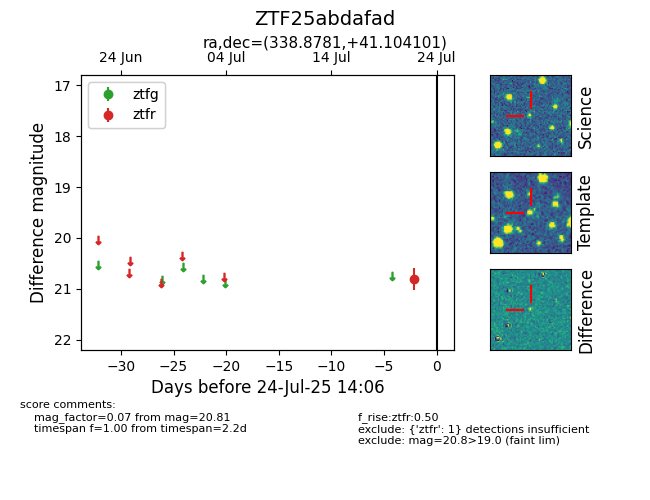

Target ZTF25abdafad at 2025-07-24 14:06, see:
FINK: fink-portal.org/ZTF25abdafad
Lasair: lasair-ztf.lsst.ac.uk/objects/ZTF25abdafad
ALeRCE: alerce.online/object/ZTF25abdafad
alt names
ZTF25abdafad (ztf,fink)
coordinates:
equatorial (ra, dec) = (338.8781,+41.10410)
galactic (l, b) = (97.1012,-14.85149)
photometry
last ztfr=20.81
1 ztfr detections
